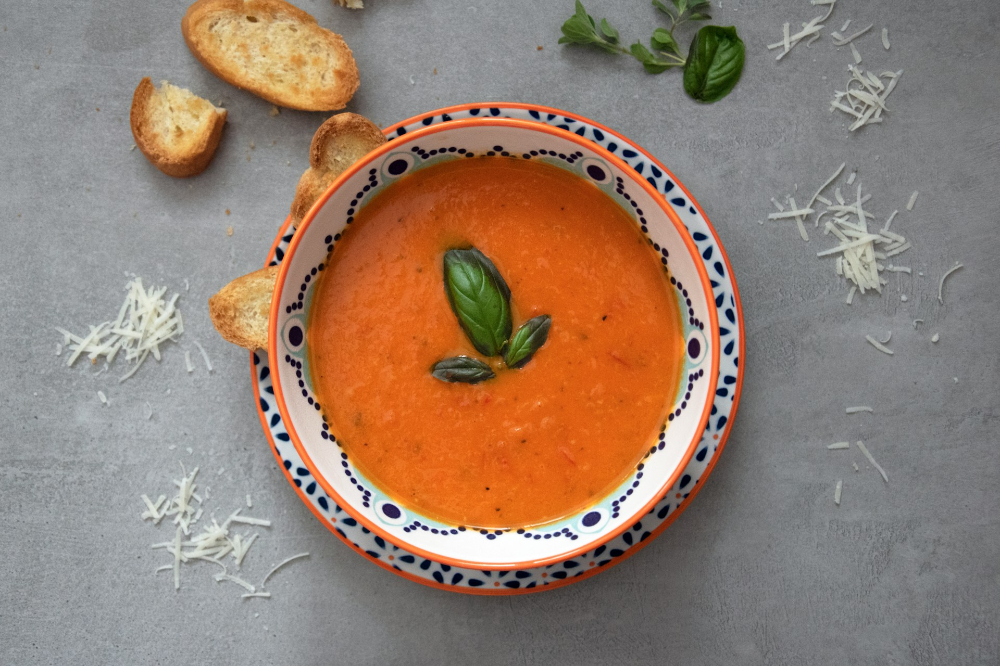

Home
Tomato Soup

Photo by Julia Kicova on Unsplash
Description
This tomato soup recipe makes a rich, smooth, comforting soup that's quick to make when you have ripe summer tomatoes. Delicious topped with fresh basil and a grilled cheese sandwich for the ultimate homemade comfort food.
The real Allrecipes webpage on tomato soup can be found here
Ingredients
- 4 cups chopped fresh tomatoes
- 2 cups chicken broth
- 4 cloves garlic
- 1 large slice of onion
- 2 tablespoons butter
- 2 tablespoons all-purpose flour
- 2 teaspoons white sugar/to taste
- 1 teaspoon salt/to taste
Steps
- Combine tomatoes, chicken broth, garlic cloves, and a large slice of onion in a stockpot over medium heat. Bring to a boil, and gently simmer for about 15 to 20 minutes to blend flavors.
- Remove from heat and run the mixture through a food mill into a large bowl, or pan. Discard any stuff left over in the food mill.
- Melt butter over medium heat in the now empty stockpot. Stir in flour to make a roux by cooking, whisking constantly, until mixture turns medium brown.
- Gradually whisk in a bit of the tomato mixture to prevent lumps from forming, then stir in the rest.
- Season with sugar and salt to taste.